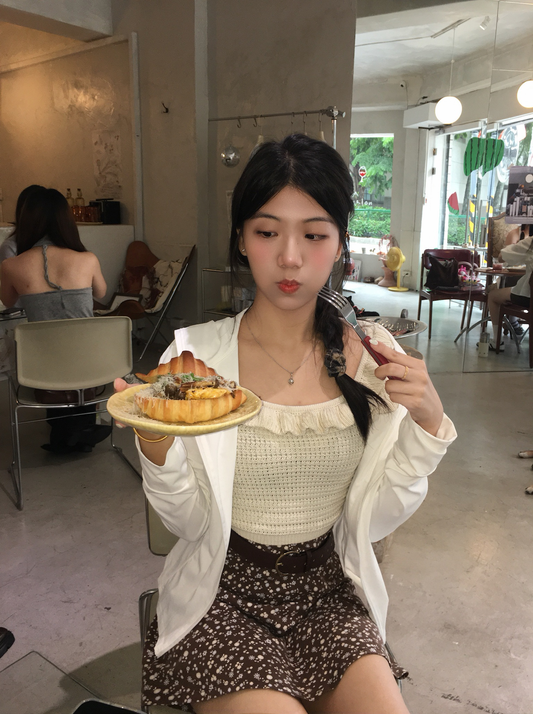
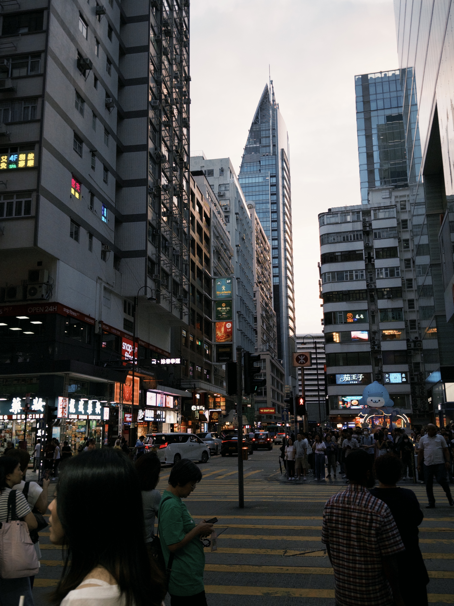
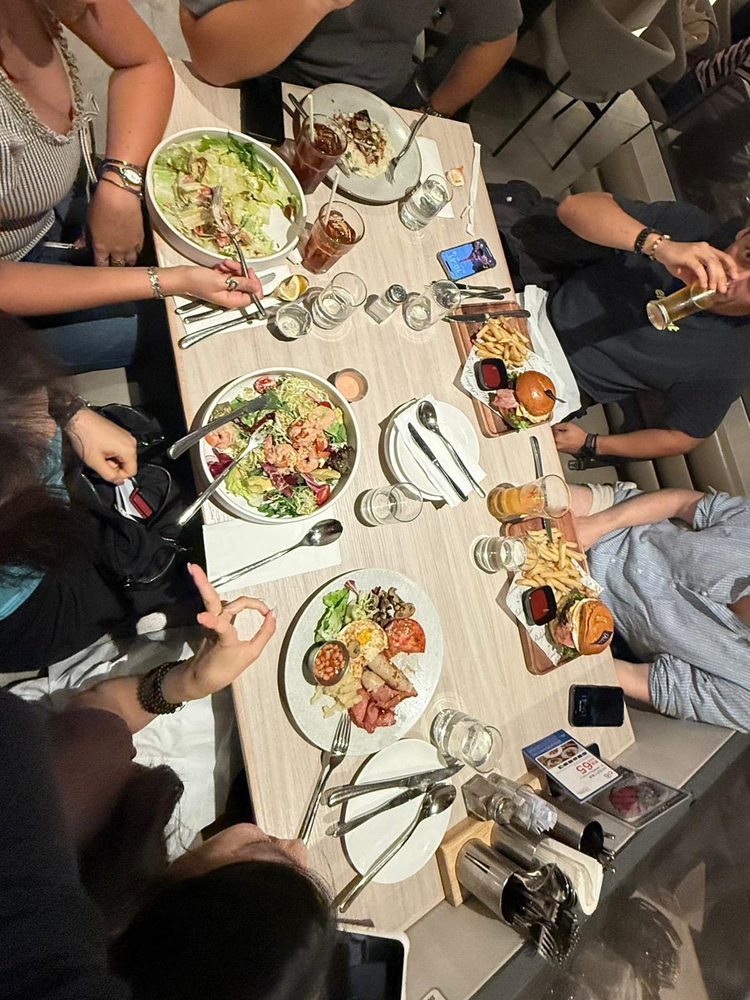
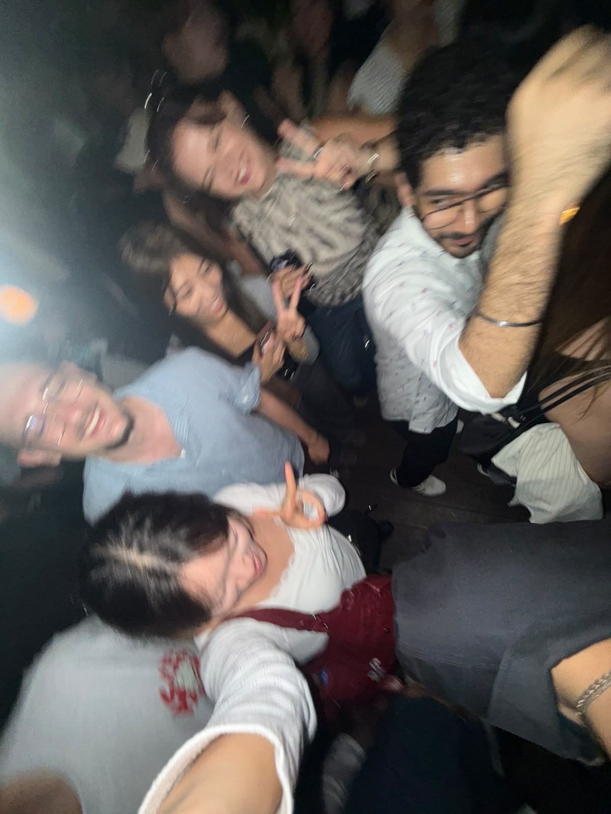
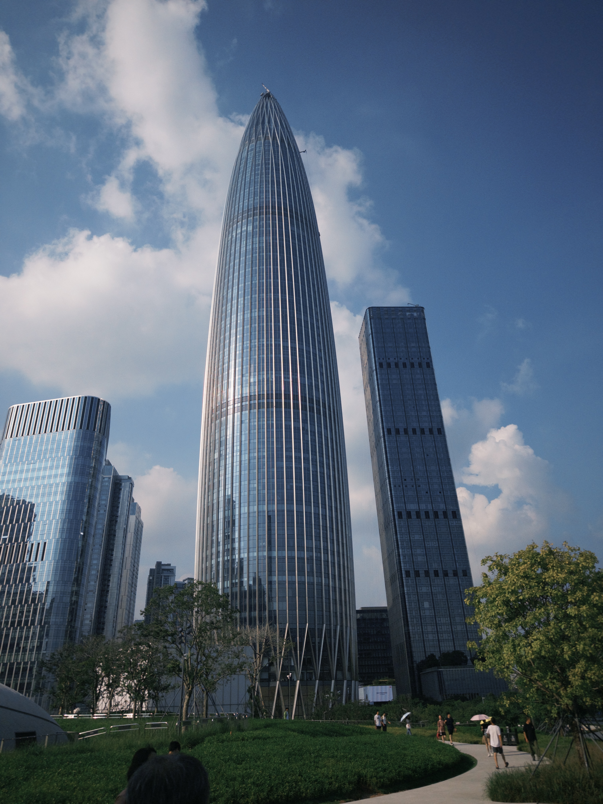
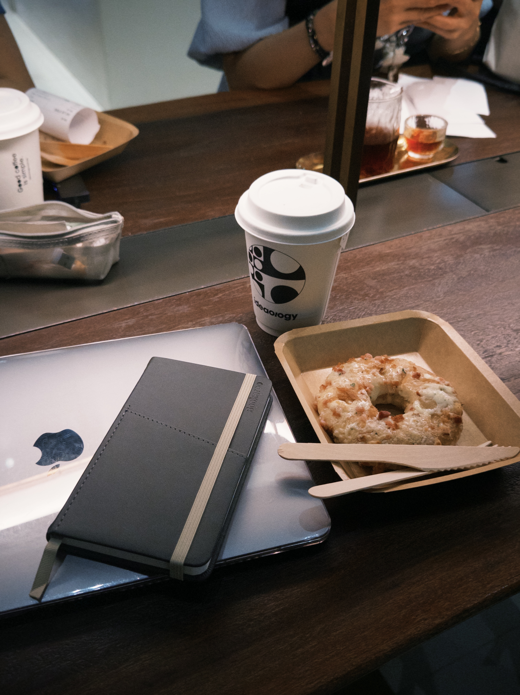
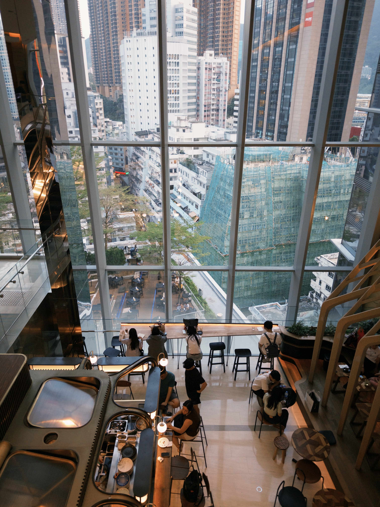
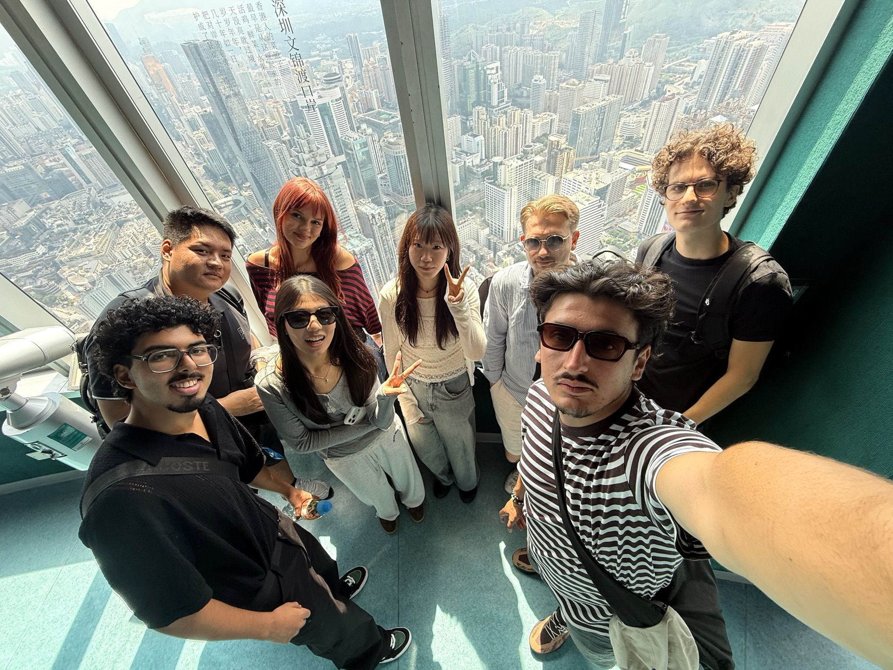

HOME
Yuan Ze
University
Global Business Management
Year 4 ✳
TAIWANTAIWAN → HONG KONG
A year of new streets, new faces
and finding my own way.

new chapter,
same curious heart ↙
Quiet at first, curious at heart — always ready to discover something new.
A NOTE TO THE READER
a little shy,
a lot curious
I’m Belle Su, a Year 4 Global Business Management student from Yuan Ze University in Taiwan. Right now, I’m trading my familiar routines for a new chapter at The Hang Seng University of Hong Kong.
Hong Kong felt like the right place to begin. It’s an international city where cultures meet every day, and I’m excited to learn from people whose lives look different from mine. I’m also thinking about pursuing a master’s degree here one day, and I’d love to grow more confident using English by studying and making friends across cultures.
I can be reserved when I first meet someone. Give me a little time, though, and my curiosity tends to take over: I want to wander somewhere unfamiliar, try something new, and see what I might learn about the world — and myself.
“Love yourself and be yourself.”
— Belle
CAMPUS, THEN & NOW
Two campuses, one very full notebook.
HOME
Global Business Management
Year 4 ✳
TAIWANNOW
Exchange Student
2026–27 ✳
HONG KONGThis is my first time studying psychology, so every concept feels new and fresh. I love noticing how it gives me a different way to think about people — and the little things we do every day.
a new lens on peopleI chose Artificial Intelligence because I want to learn more about AI and understand how it is changing the way we study, work, and live.
learning how the future worksI’m learning German because I hope to understand some basic everyday conversations. Knowing a little of the language could make future travel easier and more interesting.
a few words for the roadA CITY I’M STILL GETTING TO KNOW
New corners, long walks, little firsts.
More pages to come.

Victoria Harbour is still my favourite view in Hong Kong, especially at night. Some of my favourite memories are simple ones: sitting by the water with friends, talking, having a drink, watching the city lights, and enjoying the moment. It feels relaxing and happy, as if everything has slowed down a little.
one of my favourite nights ↙
HONG KONG ✳ A FAVOURITE PLACE





A FEW VERY IMPORTANT THINGS
the small stuff is the good stuff ↗
GOOD THINGS START WITH HELLO
talk soon? ♡